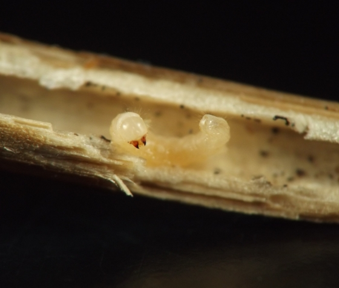
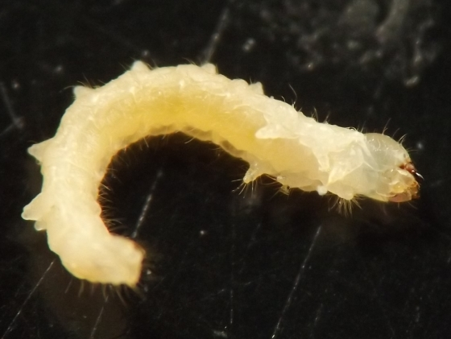
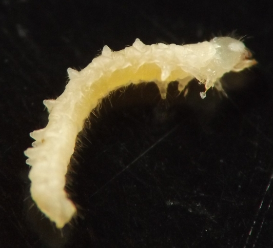
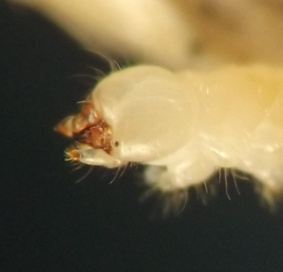
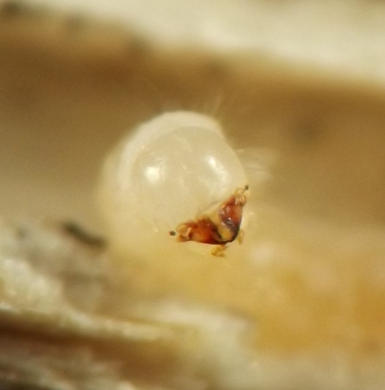
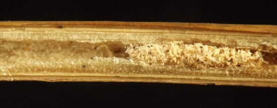
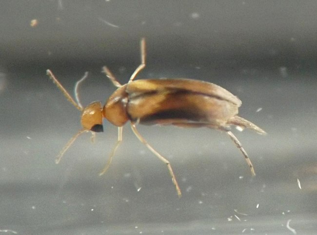
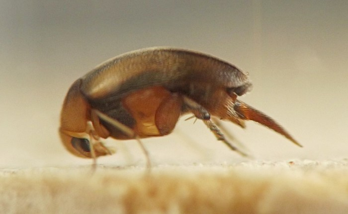

Stem borer (Coleoptera: Mordellidae) in Caulophyllum
| Record no.: | 0132 |
|---|---|
| Feeding guild: | Stem borer |
| Taxonomy: | Coleoptera: Mordellidae |
| Stages observed: | trace, larva, adult |
| Distribution observed: | IA |
| Hosts in Caulophyllum: | C. thalictroides (blue cohosh) |
I found several larvae in dead stems of the host in winter. Large accumulations of frass that accompanied some of the larvae indicated that the larvae had performed significant feeding in the stems during the prior growing season. After overwintering in the dead stems, some larvae needed to conduct additional feeding in the interiors of their stems in spring in order to reach maturity. I reared a reddish adult from an overwintered larva in late April 2024.

 Prev
Prev
{kind=link}
{kind=link}

{kind=link}

{kind=link}

{kind=link}

{kind=link}

{kind=link}

{kind=link}

Coll. 12/15/21, photos taken 01/16/22 (01-06); coll. 12/14/23, em. 04/25/24, photos taken 05/01/24 (07-08).
Page created: October 31, 2023. Last update: March 9, 2026